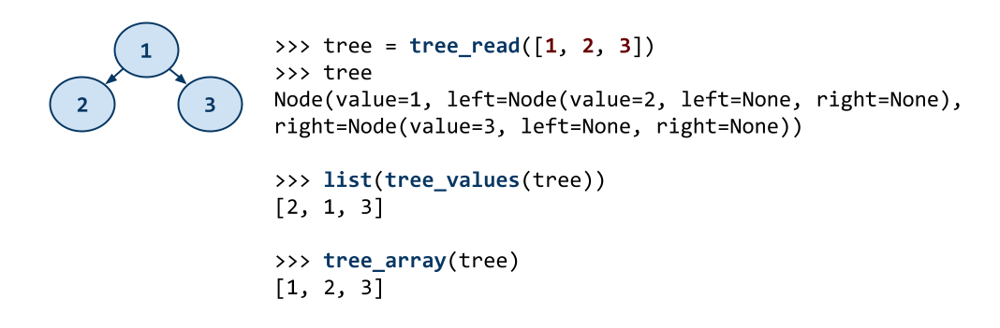
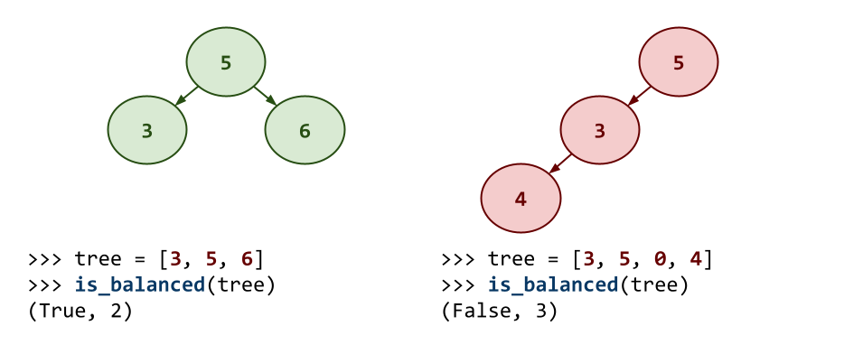
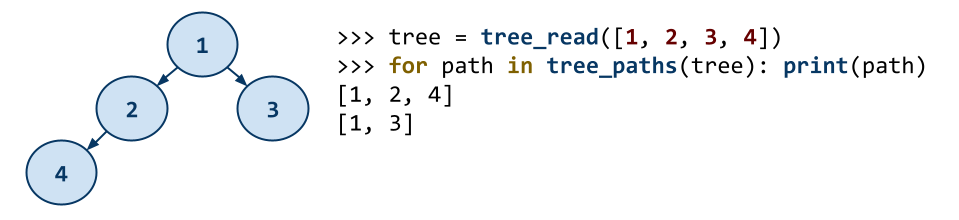

The goal of this homework assignment is to allow you to explore building binary trees in Python and to practice using divide-and-conquer to solve programming challenges involving these data structures.
For this assignment, you are to do your work in the homework09 folder of
your assignments GitHub repository and push your work by noon
Wednesday, November 8.
Before starting this homework assignment, you should first perform a git
pull to retrieve any changes in your remote GitHub repository:
$ cd path/to/repository # Go to assignments repository
$ git switch master # Make sure we are in master branch
$ git pull --rebase # Get any remote changes not present locally
Next, create a new branch for this assignment:
$ git checkout -b homework09 # Create homework09 branch and check it out
To help you get started, the instructor has provided you with the following skeleton code:
# Go to assignments repository
$ cd path/to/assignments/repository
# -----------------------------------------------------
# MAKE SURE YOU ARE NOT INSIDE THE homework09 DIRECTORY
# -----------------------------------------------------
# MAKE SURE YOU ARE AT THE TOP-LEVEL DIRECTORY
# -----------------------------------------------------
# Download skeleton code tarball
$ curl -LO https://www3.nd.edu/~pbui/teaching/cse.20312.fa23/static/tar/homework09.tar.gz
# Extract skeleton code tarball
$ tar xzvf homework09.tar.gz
Once downloaded and extracted, you should see the following files in your
homework09 directory:
homework09
\_ Makefile # This is the Makefile for building all the assignment artifacts
\_ balanced.py # This is the Python script for the Balanced programming challenge
\_ invert.py # This is the Python script for the Invert programming challenge
\_ paths.py # This is the Python script for the Paths programming challenge
\_ tree.py # This is the Python module for the Tree classes and utilities
Now that the files are extracted into the homework09 folder, you can
commit them to your git repository:
# Go into homework09 folder
$ cd homework09
# Add and commit initial skeleton files
$ git add Makefile # Mark changes for commit
$ git add *.py
$ git commit -m "Homework 09: Initial Import" # Record changes
After downloading and extracting these files, you can run the make command
to run the tests.
# Run all tests (will trigger automatic download)
$ make
You will notice that the Makefile downloads three additional test scripts:
homework09
\_ balanced_test.py # This is the Python unit test for the Balanced programming challenge
\_ invert_test.py # This is the Python unit test for the Invert programming challenge
\_ paths_test.py # This is the Python unit test for the Paths programming challenge
\_ tree.py # This is the Python unit test for the Tree classes and utilties
In addition to the embedded doctests in the skeleton code, you will be using these unit tests to verify the correctness and behavior of your code.
The test scripts are automatically downloaded by the Makefile, so any
modifications you do to them will be lost when you run make again.
Likewise, because they are automatically downloaded, you do not need to add
or commit them to your git repository.
The details on what you need to implement for this assignment are described in the following sections.
For the first activity, you are to implement a few binary tree utilities that will be used in the subsequent programming challenges.

Note, you will be working with both Node based binary trees:
@dataclass
class Node:
value: int
left: Optional['Node'] = None
right: Optional['Node'] = None
And you will be working with array based binary trees, where the values are stored in BFS format (ie. level-by-level).
tree.py¶The tree.py Python script contains the binary tree utilties you are to
complete for this activity:
def tree_read(array: list[int], index: int=0) -> Optional[Node]
This function uses divide-and-conquer to convert the tree
arrayin BFS format into aNodebased binary tree. Theindexdenotes the current position in the treearray. The function returns aNodethat has the appropriatevalue,leftandrightattributes.
index or value).
def tree_values(root: Optional[Node]) -> Iterator[int]
This function
yieldsall the values in the binary tree by performing a recursive DFS (inorder) traversal of the binary tree.
yield from on a recursive generator.
def tree_array(root: Optional[Node]) -> list[int]
This function uses an iterative BFS traversal of the binary tree to produce a list of all the values in the binary tree in level-by-level order.
You may notice that in addition to the usual comments and TODOs, the docstrings of each method also contains a few doctests.
You are not to modify these doctests and must keep them in-place. They are used to verify the correctness of your code.
Your code goes below the docstrings, where the TODO and pass commands are (you may remove the pass once you complete the method).
As you implement tree.py, you can use the provided doctests to verify the
correctness of your code:
# Run doctests
$ python3 -m doctest tree.py -v
...
5 items had no tests:
tree
tree.Node
tree.Node.__eq__
tree.Node.__init__
tree.Node.__repr__
3 items passed all tests:
1 tests in tree.tree_array
1 tests in tree.tree_read
1 tests in tree.tree_values
3 tests in 8 items.
3 passed and 0 failed.
Test passed.
You can also use make to run both the doctests and the unit tests:
# Run unit tests (and doctests)
$ make test-tree
Testing tree ...
test_00_doctest (__main__.TreeTests) ... ok
test_01_mypy (__main__.TreeTests) ... ok
test_02_tree_read (__main__.TreeTests) ... ok
test_03_tree_values (__main__.TreeTests) ... ok
test_04_tree_array (__main__.TreeTests) ... ok
Score 3.00 / 3.00
Status Success
----------------------------------------------------------------------
Ran 5 tests in 0.064s
OK
To just run the unit tests, you can do the following:
# Run unit tests
$ ./tree_test.py -v
...
To run a specific unit test, you can specify the method name:
# Run only mypy unit test
$ ./tree_test.py -v TreeTests.test_01_mypy
...
You should practice iterative development. That is, rather than writing a bunch of code and then debugging it all at once, you should concentrate on one function at a time and then test that one thing at a time. The provided unit tests allow you to check on the correctness of the individual functions without implementing everything at once. Take advantage of this and build one thing at a time.
For this activity, you are to solve this infamous programming challenge:
An infamous story about the disconnect between technical programming interviews and actual software development skills comes from Max Howell, a Homebrew developer:
Although you are not really that excited about the arbitrary programming challenges technology companies make you do when you interview, you realize that now that you have a handle of divide-and-conquer, you can actually invert a binary tree pretty easily. Show Max how it is done.
invert.py¶To solve this programming challenge, you will need to complete the
invert.py script by implementing the following functions:
def tree_invert(node: Optional[Node]) -> Optional[Node]
This function inverts the binary tree starting at the specified
nodeusing divide-and-conquer and returns the new root of the binary tree. Inverting a binary tree means swapping theleftandrightsub-trees recursively as shown in the diagram above.
def main(stream=sys.stdin)
This function reads each line from the given
stream, parses the line into aNodebased binary tree, prints the binary tree as a comma separated string, inverts the binary tree, and then prints this inverted binary tree.
Consider using tree_read to build the binary tree from the line read from stream.
Consider using tree_array to convert the Node based binary tree into a list.
Consider using a list comprehension whenever you need to convert all
the values in a list from one type to another.
Consider using str.join with the ', ' delimiter to combine the values
in a tree array into a single string.
As you implement invert.py, you can use the provided doctests to verify
the correctness of your code:
# Run doctests
$ python3 -m doctest invert.py -v
...
1 items had no tests:
invert
2 items passed all tests:
2 tests in invert.main
1 tests in invert.tree_invert
3 tests in 3 items.
3 passed and 0 failed.
Test passed.
You can also use make to run both the doctests and the unit tests:
# Run unit tests (and doctests)
$ make test-invert
Testing invert ...
test_00_doctest (__main__.InvertTests) ... ok
test_01_mypy (__main__.InvertTests) ... ok
test_02_tree_invert (__main__.InvertTests) ... ok
test_03_main (__main__.InvertTests) ... ok
Score 2.00 / 2.00
Status Success
----------------------------------------------------------------------
Ran 4 tests in 0.062s
OK
To just run the unit tests, you can do the following:
# Run unit tests
$ ./invert_test.py -v
...
To run a specific unit test, you can specify the method name:
# Run only mypy unit test
$ ./invert_test.py -v InvertTests.test_01_mypy
...
For this activity, you will need to solve another common programming challenge.
As we will discuss next week, a binary tree must be balanced in order
for it to have efficient (i.e. O(logn)) operations such as insertion
and searching.

To determine whether or not a binary tree is balanced, you are to write
an is_balanced() function (as shown above) that takes in a tree array
in BFS format and checks the following rules:
Both the left and right sub-trees must be balanced.
The difference between the left and right sub-tree heights
must be no more than 1.
You are to implement this function using divide-and-conquer.
balanced.py¶To solve this problem, you are to complete the balanced.py Python script by
implementing the following functions:
def is_balanced(array: list[int], index: int=0) -> Tuple[bool, int]
This function determines if the tree
arrayin BFS format is balanced according to the rules described above. The specifiedindexindicates whichNodein the binary tree you are currently at as you traverse the treearrayusing divide-and-conquer. The function returns two values: whether or not the binary tree is balanced and the height of the binary tree.
def main(stream=sys.stdin) -> None
This function reads each line from the given
stream, parses the line into an tree array in BFS format, calls theis_balancedfunction on this binary tree, and then prints out whether or not the binary tree is balanced.
def function(x):
return x - 1, x + 1 # Return multiple values
x_minus, x_plus = function(x) # Assign multiple return values
As you implement balanced.py, you can use the provided doctests to verify the
correctness of your code:
# Run doctests
$ python3 -m doctest balanced.py -v
...
1 items had no tests:
balanced
2 items passed all tests:
2 tests in balanced.is_balanced
2 tests in balanced.main
4 tests in 3 items.
4 passed and 0 failed.
Test passed.
You can also use make to run both the doctests and the unit tests:
# Run unit tests (and doctests)
$ make test-balanced
Testing balanced ...
test_00_doctest (__main__.BalancedTests) ... ok
test_01_mypy (__main__.BalancedTests) ... ok
test_02_is_balanced (__main__.BalancedTests) ... ok
test_03_main (__main__.BalancedTests) ... ok
Score 2.00 / 2.00
Status Success
----------------------------------------------------------------------
Ran 4 tests in 0.045s
OK
To just run the unit tests, you can do the following:
# Run unit tests
$ ./balanced_test.py -v
...
To run a specific unit test, you can specify the method name:
# Run only mypy unit test
$ ./balanced_test.py -v BalancedTests.test_01_mypy
...
For this activity, you are implement a generator that yields every
path from the root of a binary tree to each leaf as shown below:

paths.py¶To solve this problem, you are to complete the paths.py Python script by
implementing the following functions:
def tree_paths(root: Optional[Node], path: list[int]=[]) -> Iterator[list[int]]
This generator function
yieldsall the paths from the root of a binary tree to each of the leaves by using a divide-and-conquer traversal. Therootdenotes the currentNodein the traversal, whilepathmaintains the current path (list ofNodevalues) leading to the currentroot.
def main(stream=sys.stdin) -> None
This function reads each line from the given
stream, parses the line into aNodebased binary tree, and then prints out each path in the binary tree (output one path per line).
Consider making a copy of the path rather than updating the current one:
path = path + [root.value]
You will most likely need two base cases: you are at an invalid Node
or you are at a leaf.
Remember that if you make a recursive call to a generator function, then
you will need to either iterate over the returned object or you can use
yield from:
yield from tree_paths(...)
As you implement paths.py, you can use the provided doctests to verify
the correctness of your code:
# Run doctests
$ python3 -m doctest paths.py -v
...
1 items had no tests:
paths
2 items passed all tests:
2 tests in paths.main
1 tests in paths.tree_paths
3 tests in 3 items.
3 passed and 0 failed.
Test passed.
You can also use make to run both the doctests and the unit tests:
# Run unit tests (and doctests)
$ make test-paths
Testing paths ...
test_00_doctest (__main__.PathsTests) ... ok
test_01_mypy (__main__.PathsTests) ... ok
test_02_tree_paths (__main__.PathsTests) ... ok
test_03_main (__main__.PathsTests) ... ok
Score 3.00 / 3.00
Status Success
----------------------------------------------------------------------
Ran 4 tests in 0.059s
OK
To just run the unit tests, you can do the following:
# Run unit tests
$ ./paths_test.py -v
...
To run a specific unit test, you can specify the method name:
# Run only mypy unit test
$ ./paths_test.py -v PathsTests.test_01_mypy
...
Once you have completed all the activities above, you are to complete the following reflection quiz:
As with Reading 01, you will need to store your answers in a
homework09/answers.json file. You can use the form above to generate the
contents of this file, or you can write the JSON by hand.
To check your quiz directly, you can use the check.py script:
$ ../.scripts/check.py
Checking homework09 quiz ...
Q1 0.30
Q2 0.10
Q3 0.40
Q4 0.10
Q5 0.60
Q6 0.10
Q7 0.40
Score 2.00 / 2.00
Status Success
For extra credit, you are to solve the following LeetCode problem in Python.
To receive credit, you must pass on LeetCode and achieve an Accepted submission.
To get credit for this Leet Point, show your solution and the LeetCode acceptance page to a TA to verify (or attached a screenshot with both to your Pull Request). You have up until two days after this assignment is due to verify your Leet Point.
Remember that you can always forgo this Leet Point for two extra days to do the homework. That is, if you need an extension, you can simply skip the Leet Point and you will automatically have until Friday to complete the assignment for full credit.
Just leave a note on your Pull Request of your intentions.
To submit your assignment, please commit your work to the homework09 folder
of your homework09 branch in your assignments GitHub repository:
#-----------------------------------------------------------------------
# Make sure you have already completed Activity 0: Preparation
#-----------------------------------------------------------------------
...
$ git add tree.py # Mark changes for commit
$ git commit -m "Homework 09: Activity 1" # Record changes
...
$ git add invert.py # Mark changes for commit
$ git commit -m "Homework 09: Activity 2" # Record changes
...
$ git add balanced.py # Mark changes for commit
$ git commit -m "Homework 09: Activity 3" # Record changes
...
$ git add paths.py # Mark changes for commit
$ git commit -m "Homework 09: Activity 4" # Record changes
...
$ git add answers.json # Mark changes for commit
$ git commit -m "Homework 09: Activity 5" # Record changes
...
$ git push -u origin homework09 # Push branch to GitHub
Remember to create a Pull Request and assign the appropriate TA from the Reading 10 TA List.
DO NOT MERGE your own Pull Request. The TAs use open Pull Requests to keep track of which assignments to grade. Closing them yourself will cause a delay in grading and confuse the TAs.